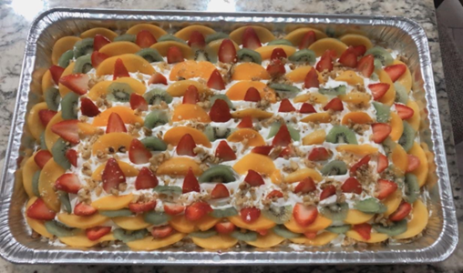

Dulce 3 Leches en Casa
Por Katherine Herrera
Ingredientes:
1 caja de dulce de vainilla
1 lata leche evaporada
1 lata leche condensada
1 lata de crema de leche
1 lata de crema batida
Para decorar:
Fresas
Kiwi
Cerezas
Nueces
Melocotones
Instrucciones:
1. Hornea el dulce de vainilla por 20 min hasta que crezca. Después que esté listo y frío empiezas a vertir poco a poco las leches que previamente habías mezclado. Excepto la crema batida. Ya que todo el bizcocho esté sumamente empapado refrigerar por 40 min. Esto ayudará a que el bizcocho absorba todas las leches y quede suave.
2. Si tienes una batidora, batir a mediana velocidad la crema batida hasta adquirir una consistencia esponjosa. Colocar esta mezcla arriba del bizcocho y empezar a decorar.
Decoración:
Corta todas las frutas en rodajas o al gusto de tu preferencia y empezar a colocarlas arriba de la crema de leche.
Refrigerar por 30 min y listo, a disfrutar.